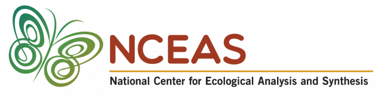
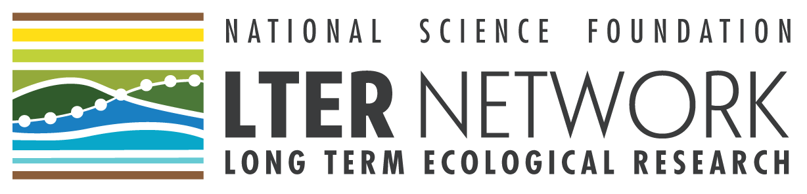

Scientific Computing Support at NCEAS
 
What We Do
We are a small (but mighty!) team of data scientists working at the National Center for Ecological Analysis and Synthesis (NCEAS). We provide modern technological infrastructure to support your analytical and other computing or network-based needs. In addition to the technical support during your visit at NCEAS, our scientific computing team is available to discuss and advise on data science and scientific programming tasks, such as:
- Organizing and assembling your data
- Assistance with data harmonization and documentation
- Structuring and integrating heterogeneous datasets
- Modeling and analysis of your data
- Scaling your analysis using NCEAS’ analytical server
- Scripting best practices and reviewing code
- Preserving and promoting your products on the Web - from derived datasets and terminological glossaries/vocabularies, to scripts, model codes, and interactive “web applications”
- Contact our team with your requests at scicomp@nceas.ucsb.edu
OTHER CONTENT UNDER CONSTRUCTION
Below here is leftover from old home page
- Offering workshops on new skills or programs
- Helping you get set up on NCEAS’ server
- Acquiring data from third parties
- Writing code to wrangle, analyze, or visualize the data your group has already collected
- And so much more!
Depending on your team’s preferences, we can operate on a spectrum of independence ranging from complete self-sufficiency after initial definition of task scope to coding together with your team.
Please feel free to take a look at our NCEAS information page here as well.
Working Together
We are excited to work with your team and currently offer a range of options for what that collaboration might look like. The categories below are not exhaustive so if you think your needs will fall between or outside of these tasks, please don’t hesitate to email us to start that conversation!
Working Group Tasks
Tasks
This level of collaboration is the core to our value to working groups! When your group identifies a data-related need (e.g., designing an analytical workflow, creating a website, writing an R Shiny app, etc.), you reach out to our team and get the conversation started. During that time we will work closely with you to define the scope of the work and get a clear picture of what “success” looks like in this context.
Once the task is appropriately defined, the conversation moves on to how independently you’d like us to work. This varies dramatically between tasks even within a single working group and there is no single right answer! For some tasks, we are capable of working completely independently and returning to your team with a finished product in hand for review but we are equally comfortable working closely with you throughout the life-cycle of a task.
Note on Our Availability
We love working with the LTER working groups but we are a small team and must divide our time equitably among the 3-8 working groups that exist at any given time. While we are happy to discuss tasks as they arise, we do try to rotate through which working group we are helping so that one group’s tasks don’t cause us to neglect work for another group.
Analytical Sprints
That said, we do offer “analytical sprints” for longer projects. In an analytical sprint you will get one of our team members working full time only on your group’s tasks for 3-4 weeks! We are excited that these sprints are a part of our “menu” of offerings to you all but please reach out to us to start the conversation if you would like to discuss asking for an analytical sprint!
Weekly Office Hours
Each of our staff members offers a one-hour block weekly as a standing office hour. This is a great time to join us with small hurdles or obstacles you’re experiencing in a given week. For example, previous office hours have dealt with topics like refreshing on git/GitHub vocabulary, authenticating the googledrive R package, or solving a specific error in a new R script.
Workshops & Trainings
It is sometimes the case that your working group wants to become more familiar (or get a refresher) on a tool you’d like to include in your group’s workflow. To that end we can design and offer workshops on a selection of data science tools. Previous workshops include an introduction to GitHub, a primer on the tidyverse R packages, and a review of the fundamentals of R Shiny apps. Our past workshops are summarized here and we are happy to offer new workshops if your group wants a workshop on something within our knowledge base. These workshops are typically 1-2 hours but we can be flexible with that timing depending on your group’s needs.
Similarly, we also have been creating more ‘go at your own pace’-style tutorials that can be accessed here. These tutorials are usually smaller in scope than workshops but are still built to maximize value to your group either as review or first contact with a given subject. As with the workshops, we are happy to create new tutorials if something comes up for your team so please reach out and we can discuss further!